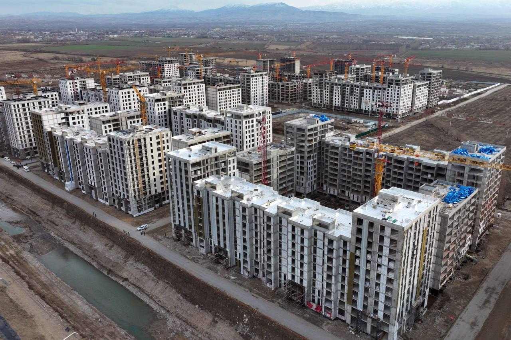

"Qurilish sohasidagi o‘sish:"
Qurilish ishlari hajmi 400 trillion so‘mga ($32.7 mlrd) yetishi kutilmoqda. Sifatsiz qurilishlar muammosini hal qilish uchun hududiy muhandislik kompaniyalari ustidan nazorat kuchaytirildi.
O‘zbekiston iqtisodiyotining lokomotiviga aylangan qurilish sohasi 2026-yilda o‘zining eng yuqori nuqtalaridan biriga chiqdi. Bugungi kunda umumiy qurilish ishlari hajmi 400 trillion so‘mga ($32.7 mlrd) yetishi kutilayotgani shunchaki statistik ko‘rsatkich emas, balki mamlakatning butun infratuzilmasi va urbanizatsiya jarayonlari yangi bosqichga o‘tganidan dalolat beradi. Yanvar oyining o‘zida qurilish hajmi o‘tgan yilning mos davriga nisbatan 9.2% ga o‘sib, 13 trillion so‘mdan oshib ketganini ko‘rishimiz mumkin. Bu o‘sishning asosiy qismi nafaqat turar-joy binolari, balki fuqarolik muhandisligi ob’ektlari — yo‘llar, ko‘priklar va kommunikatsiya tarmoqlari hisobiga to‘g‘ri kelmoqda, chunki bu sohada o‘sish sur’ati qariyb 35.6% ni tashkil etdi. 2026-yil mamlakatimizda "miqdordan sifatga o‘tish" davri sifatida tarixda qolmoqda. Endilikda asosiy e’tibor binolarning qanchalik tez bitishiga emas, balki ularning zilzilabardoshligi va seysmik xavfsizligiga qaratilgan. Shu maqsadda, 2026-yil 1-yanvardan boshlab noqonuniy qurilishlarning oldini olish va ularni erta aniqlash bo‘yicha mutlaqo yangi, qat’iy nazorat mexanizmlari ishga tushirildi. Hududiy muhandislik kompaniyalari faoliyati ustidan nazoratning kuchaytirilishi esa qurilish jarayonidagi zanjirning eng zaif nuqtalarini mustahkamlashga xizmat qilmoqda.


Bu islohotlar zamirida korrupsion omillarni cheklash va sohani to‘liq raqamlashtirish yotibdi. "Shaffof qurilish" milliy axborot tizimi orqali har bir g‘ishtning qo‘yilishi va har bir so‘mning sarflanishi onlayn nazorat qilinmoqda. Ayniqsa, hududlarda loyiha hujjatlaridan chetga chiqish yoki sifatsiz materiallardan foydalanish holatlari bo‘yicha javobgarlik bir necha barobar oshirildi. "Yangi O‘zbekiston" massivlari va mahallalar infratuzilmasini rivojlantirish uchun ajratilgan qariyb 400 million dollar miqdoridagi mablag‘lar aynan mahalla darajasidagi qurilish sifatini yaxshilashga yo‘naltirilgan. Bu jarayonda kichik korxonalar va mikrofirmalar ham faol ishtirok etmoqda, ularning sohadagi ulushi qariyb 46% ni tashkil etishi iqtisodiy faollikning barcha qatlamlarga yoyilganini ko‘rsatadi. Toshkent shahri hali ham qurilish poytaxti bo‘lib qolayotgan bo‘lsa-da (4 trln so‘mdan ortiq hajm), Jizzax, Sirdaryo va Qoraqalpog‘iston Respublikasida o‘sish sur’atlari hayratlanarli darajada yuqori bo‘lib, bu hududlardagi yirik sanoat va infratuzilma loyihalari bilan bog‘liqdir. Qurilish sohasidagi bu keng ko‘lamli o‘zgarishlar nafaqat yangi binolar, balki minglab yangi ish o‘rinlari yaratilishiga ham sabab bo‘ldi; birgina poytaxtning o‘zida 2026-yilda 30 mingdan ortiq fuqaro qurilish va kommunal sohalarda doimiy va qonuniy ish o‘rinlari bilan ta’minlanishi maqsad qilingan. Xulosa qilib aytganda, 2026-yilgi qurilish sohasi — bu tartib, xavfsizlik va raqamli nazorat uyg‘unligidagi ulkan bunyodkorlik maydonidir, bu yerda endi "har qanday yo‘l bilan qurish" emas, balki "xalqaro standartlar asosida va xavfsiz qurish" bosh tamoyilga aylandi.